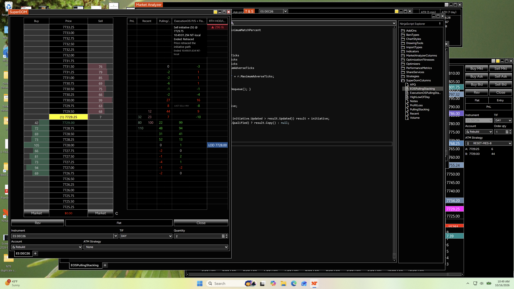

No WHAT QUALIFIED or TRACKING headings; tighter spacing.
ExecutionOS · cosmetic update
Same event information, less space
The event and its status speak for themselves. Redundant headings removed; detection preserved.
What’s in Play
Event, price, qualification time, status, ending reason and time.
All current settings remain applicable.
36 summary checks pass. Compile and inspect in NinjaTrader.
Compact layout
Illustrative layout, not a native screenshot or new recorded event.
Sell initiative (SI) @ 7739
10:08:44.341 NT-local
Ended: Quote validation failed
Inside quotes locked (tick 30956)
Ended 10:08:45.310 NT-localWhat changed
- Removed the redundant WHAT QUALIFIED and TRACKING headings.
- Shortened Active — still tracking to Active in the card.
- Reduced inter-line spacing from 3 to 1 logical units; retained the chosen font size.
- Kept full event type/code, original price, qualification time, ending category, exact reason, and ending time.
Tracking meant whether the detector was still following the qualified event. The Active or Ended line already communicates that status. Removing the heading does not remove information about the event.
Install and settings
Back up your installed v4 outside NinjaTrader 8/bin/Custom. Replace the entire existing ExecutionOSPullingStacking_v4_Experimental script with the supplied source, compile with F5, and verify Build = 2026-10-16.3 EXP. Do not add a duplicate script or column.
Keep every current setting, including Show fixed last-event summary = True, Summary font size = 14 (or your chosen size), and your existing detection thresholds. No reset or tuning is needed for this display change. After a reload, wait for a new qualification: in-memory history is not imported from old logs.
The card still updates on the next qualification, adds the ending reason afterward, and remains until replacement or an existing context reset. Candidates do not replace it. It is still anchored at the top of v4 and occupies part of that column’s upper rows. To hide it, turn Show fixed last-event summary off; the detector keeps running. There is no dismiss-only button in this update.
Validation and rollback
36 existing summary integration scenarios passed on this source, including C# 5 compilation against API-shaped stubs. Source comparison verifies that only the two card presentation methods and build stamps changed from 16.2. Both calculation cores, thresholds, event logging apart from the build ID, reset behavior, stored qualification/ending details, and other row renderers are unchanged.
The prior 349-scenario suite passed on 16.2; this cosmetic update reruns the relevant 36 summary checks. Native NinjaTrader compilation and visual verification of 16.3 remain pending. No new signal-accuracy claim, platform installation, Git commit, or push was made.
Rollback: paste rollback/ExecutionOSPullingStacking_v4_2026-10-16.2.cs.txt into the same v4 script and compile. Preserve duplicate source copies outside Custom.
Event endings explained
Price rule, evidence failure, time expiry, and context reset are different outcomes. The retained card records why observation stopped; it does not grade a trade.
On a narrow screen, swipe the reference tables sideways. Open the plain-text reference.
This reference describes the actual rules in builds 2026-10-16.2 EXP and 2026-10-16.3 EXP. Those builds share the same detector. This is a documentation update; it changes no settings or indicator code.
What “price retraced” means
Price moved against an initiative far enough to exceed Maximum adverse movement (ticks). For a buy initiative, that means a downward move from a tracked favorable high. For a sell initiative, it means an upward bounce from a tracked favorable low. The rule uses reported execution prices, not candle closes, a midpoint, or the P/S numbers.
The comparison is strictly greater than the configured tolerance. With Maximum adverse movement = 1 tick, a 1-tick counter-move is allowed; a 2-tick counter-move breaches it. In an example using a 0.25-point tick, those moves are 0.25 and 0.50 points respectively. This is the current rule, not a recommendation to change the tolerance.
The path check uses the favorable extreme carried into qualification from the retained execution window, then updates that extreme while the event is active. It is not necessarily measured from the price printed at the top of the card. The separate endpoint check measures against the qualified event’s recorded price.
Hypothetical example — not a reconstruction of your recording: a sell initiative qualifies at 7729.75 and subsequently trades down to 7729.25. A bounce to 7729.50 is 1 tick and is allowed. A bounce to 7729.75 is 2 ticks from the low and ends that initiative through the path rule, even though price has not risen above its qualification price. Reverse the directions for a buy initiative.
Your screenshot records SI at 7729.75, qualified at 10:49:01.294 NT-local, then Price retraced the initiative path at 10:49:01.634 NT-local: approximately 340 ms later. It does not show the actual favorable low or the execution that triggered the bounce. The later displayed last price of 7729.25 does not undo the earlier ending. A static screenshot cannot reconstruct the intervening prints.
How to interpret the card
| Display or stage | What it indicates | What it does not establish |
|---|---|---|
| Candidate | Initial evidence exists, but the complete qualification conditions have not yet passed continuously for the confirmation duration. | That a qualified event took place. Candidates do not replace the fixed card. |
| Qualified / Active | The event passed the configured tests. Its latest recorded state has no ending yet. | A profitable trade, guaranteed continuation, or knowledge of participants’ intentions. |
| Ended: Retraced / Held level breached | A price-based invalidation was recorded while that event was being observed. | A permanent reversal or the failure of a wider trading thesis. |
| Ended: Expired | The event’s observation ended through a time/evidence-expiry rule. Read the exact reason below. | That price invalidated a qualified signal. |
| Ended: Quote validation failed / Execution validation failed / Depth coverage lost / Depth timing uncertain | Required quote, attribution, or observation evidence became unreliable or unavailable. | That the original qualification was a false positive or that price reversed. |
| Ended: Tracking suppressed / Invalidated | A fallback category; the exact reason is the useful information. | A specific directional conclusion without inspecting that reason. |
After Ended, this event is no longer being monitored. Its record remains available while the detector looks for new events. A later qualifying event replaces it. If the old event expired first, a later retracement is not retrospectively added to that old card. Quote recovery also does not reactivate an already ended event.
Every event-ending reason
The exact wording appears below the ending category or in the event log. Match generation + event ID + type when following log transitions. Some raw reasons apply to candidates as well as qualified events; their presence in a log does not by itself prove qualification.
| Exact reason text | Trigger and scope | What it indicates |
|---|---|---|
| Price retraced the initiative path | For an active qualified initiative, an execution moves more than the adverse tolerance away from its favorable extreme. The same wording can also end a candidate whose retained execution path has already breached the tolerance. Stage: Invalidated; card: Retraced if that ID qualified. | The uninterrupted initiative path no longer meets this price rule. It can be a brief pullback; continuation later is possible. |
| Price retraced the initiative endpoint | During evaluation of a qualified initiative, latest execution price is more than the tolerance below the recorded buy-initiative price, or above the recorded sell-initiative price. Stage: Invalidated; card: Retraced. | A price-based failure against the recorded endpoint. This is a separate check from the favorable-extreme path rule. |
| Price crossed the held level | Price trades more than the tolerance below the buyer-absorption bid level, or above the seller-absorption ask level. Can affect candidate or qualified absorption. Stage: Invalidated; card: Held level breached for a retained qualification. | The observed absorption level did not hold within the configured price tolerance. It does not establish a sustained breakout. |
| Price crossed the candidate level | Candidate absorption fails its adverse-movement check before qualification. Stage: Invalidated; log only for that candidate. | The candidate never completed qualification. It does not replace an older qualified card. |
| Display lifetime elapsed | A qualified event reaches Marker display (ms), measured from qualification; trial baseline 3000 ms. Stage: Expired; card: Expired. | Its configured live observation lifetime ended. Both live monitoring and its live label end; the fixed historical card remains. This is not a price-based invalidation. |
| Execution evidence no longer qualifies | A candidate absorption no longer passes its initial evidence gate, for example because its volume/dominance declines or its executions become stale. Stage: Expired; candidate log only. | Insufficient current evidence to continue that candidate. The reason alone does not identify the particular failing test. |
| Initiative evidence no longer qualifies | A candidate initiative no longer passes its initial gate, for example because required execution/quote advances, dominance, volume, or freshness no longer suffice, without the retained-path invalidation taking priority. Stage: Expired; candidate log only. | The candidate lost support before qualification. Read its diagnostic blockers for the specific failing tests. |
| Inside bid unconfirmed / Inside ask unconfirmed / Inside bid and ask unconfirmed | The depth engine cannot currently confirm one or both inside quotes. A previously open quote gate closes and suppresses active observations. Card: Quote validation failed. | The detector cannot trust its required quote reference. It is not proof that buyers/sellers changed direction. |
| Inside quotes locked (tick …) | Trusted inside bid equals inside ask in the reported depth state. Stage: Suppressed; card: Quote validation failed. | Observation pauses because a valid spread cannot be confirmed. A transient feed-update sequence can produce this state; the reason does not diagnose the cause. |
| Inside quotes crossed (bid tick …, ask tick …) | Trusted inside bid is above inside ask in the reported depth state. Stage: Suppressed; card: Quote validation failed. | An inconsistent inside spread for this detector. This is an evidence-validation stop, not a reversal signal. |
| Trade classification deteriorated | For a qualified initiative, unknown-direction execution volume exceeds the allowed share of current retained volume. Current internal allowance: at most 10% unknown volume. Stage: Suppressed; card: Execution validation failed. | Buy/sell attribution is too uncertain to continue supporting the initiative. It does not mean opposite-side execution dominance was proved. |
| Execution evidence quality deteriorated | For qualified absorption, classification quality fails, or eligible volume is at least the configured execution minimum and its matched share falls below Minimum matched executions (%). Trial matched-share threshold: 80%. Stage: Suppressed; card: Execution validation failed. | Trade/depth attribution is no longer adequate to support the absorption observation. A lower matched share is not automatically evidence of pulling. |
| Observation coverage lost / Coverage lost | The absorption level is absent or unavailable in the detector’s monitored depth coverage. This can happen as the inside moves and the level leaves Absorption depth levels, or the level is no longer present. Stage: Suppressed; card: Depth coverage lost. | The detector stopped observing that level reliably. It does not prove the resting orders were canceled or executed. |
| Depth source timing uncertain | The adapter sees a change in the depth engine’s source-timestamp regression count and blocks absorption attribution for one evidence window. Active absorption observations are suppressed. Card: Depth timing uncertain. | Depth/trade sequencing is uncertain. It does not automatically suppress initiatives through this particular absorption-attribution rule. A source regression is different from the receipt-clock rewind reset below. |
| Legacy level reset | Apply legacy resets to rolling is enabled and a legacy per-price reset clears that absorption level’s evidence. Stage: Suppressed; card uses the fallback Tracking suppressed category. | A configured reset ended the observation, not a new price or liquidity conclusion. With the testing setting False, this route is disabled. |
The numbers labelled tick inside locked/crossed quote messages are absolute price indices used internally: price divided by the instrument’s tick size. They are not the size of a price move or a contract count.
Messages while a candidate forms or qualifies
These are observation descriptions, not ending reasons.
| Exact reason text | Meaning |
|---|---|
| Initial execution evidence | A new candidate was created. It has not yet qualified. |
| Awaiting warm-up, matched executions, replenishment or hold duration | An absorption candidate is waiting for full support. The wording is a broad description; inspect blockers for the actual missing checks. |
| Awaiting warm-up, classification or duration | An initiative candidate is waiting for full support. Inspect blockers rather than assuming all named conditions are failing. |
| Executed volume, replenishment and price hold agree | Absorption support checks agree. Qualification is confirmed by the Qualified transition after its confirmation duration, not by this reason text alone. |
| Dominant executions, price advance and quote advance agree | Initiative support checks agree. Again, follow the event’s actual stage to distinguish Candidate from Qualified. |
The separate rolling P/S status words such as Estimated, warming up, or reconciling describe that calculation’s readiness/attribution. They are not additional terminal outcomes for the retained flow event.
Resets, unavailable states, and protective faults
These messages can appear in STATUS, last-reset fields, or terminal log rows. A context reset usually clears the fixed card, rather than leaving every such message displayed as an ended card. Do not interpret a missing card after a reset as a new market signal.
| Message or family | Meaning and effect | Interpretation |
|---|---|---|
| Header reset | Clicking the v4 column header resets its history/calculation context and clears the record. | Operator action; it is not a dismiss-only control or market outcome. |
| Legacy quote reset / Legacy no-data reset | Legacy reset behavior is applied to rolling evidence when enabled. A quote reset clears the context/card; a no-data per-level reset can produce Legacy level reset. | Settings-driven lifecycle behavior. |
| Session calendar ready / Session transition | Initial instrument session calendar becomes available, or the session context changes. Evidence and retained history are reset as required. | Session boundary/readiness handling, not bullish or bearish evidence. |
| Feed, connection, instrument or playback reset / Receipt clock rewind | Connection or instrument context changes, the clock source changes, or the receipt/playback clock moves backward. The old context is discarded. | Old and new observations must not be mixed. |
| Calculation settings changed / New depth engine context | Calculation mode, rolling period, reconciliation interval, or observed-depth configuration changes/rebuilds the depth engine. | Start fresh evidence collection; not a failed market event. |
| Detection disabled / Detector settings changed / Detector configuration changed / New detector configuration / Detector inactive or faulted | Detection is disabled, its settings are rebuilt, or it cannot remain active. Existing history is cleared by the adapter. | Operator/configuration/health status. Display-only font and visibility changes do not rebuild the detector. |
| Column terminated / Column inactive / SuperDOM unavailable / SuperDOM reloading | Column/UI lifecycle is no longer ready for observation. | No supported ongoing observation in that context. |
| Feed disconnected / Depth engine unavailable / Depth engine faulted / Depth snapshot required | Data or a usable depth book is unavailable; the context cannot currently support detection. | Restore valid data/context before assessing new observations. This says nothing about price direction. |
| Waiting for instrument session calendar / Outside instrument session | The session calendar is not yet ready, or the current time is outside the configured instrument session. | Readiness/session state; absence of signals here is expected. |
| session calendar request failed; reconnect or switch mode to retry / session calendar initialization failed | Calendar acquisition/initialization failed. | Platform/data setup problem; not an order-flow event. |
| Invalid depth price / invalid depth snapshot / depth snapshot exceeds book capacity | A depth price/snapshot fails validation, or a snapshot exceeds the supported book bound. | Protect against corrupt or oversized evidence; context may reset or remain unavailable. |
| Depth continuity lost: … | A positional depth update cannot be reconciled with the stored book. The suffix identifies the side, operation, position, and failure context. | A new trusted snapshot is needed. It is not itself a cancellation measurement. |
| Depth evidence capacity fault / Evidence capacity exceeded; reset required | A bounded depth/flow evidence store reaches its supported capacity. Flow faults clear the retained card through the adapter. | Protective limit, not evidence for a trade direction. |
| Negative quantity | Flow quantity validation received a negative size. | Invalid input; the flow engine faults rather than treating it as pulling. |
| New contribution receipt order regressed; reset required | A new liquidity contribution arrives with an earlier receipt time than the prior new contribution. | The flow engine’s monotonic receipt-order contract was violated; it faults rather than mixing attribution. |
| quantity overflow; click header to reset | Quantity arithmetic exceeds its supported integer range. | Runtime health issue. A header reset clears state; do not regard pre-fault evidence as a current observation. |
| Invalid flow thresholds; correct the settings | A supplied detection setting fails validation. | Correct the invalid property values; detection is unavailable. |
| refresh failure (exception type) / Flow evaluation failure (exception type) | An unexpected runtime exception occurs during refresh or flow evaluation. The parentheses identify the exception class. | Technical failure, not a price signal. Evaluation failure clears retained history; no trading inference should be drawn from a stale/absent card. |
Diagnostic blockers are not always ending reasons
The event’s exact reason is the recorded transition trigger. The checks-now / blockers fields describe which qualification checks were failing at that snapshot. A candidate can show multiple blockers. Those blockers do not all become reasons why a qualified event ended.
| Blocker names in the log | Plain-English meaning |
|---|---|
| ContextUnavailable / WarmupIncomplete | The operating context is unavailable or the evidence window has not warmed up. |
| QuoteGateClosed / InsideQuoteUnavailable | Trusted inside quotes are not currently usable. |
| CoverageUnavailable / SourceTimingBlocked | The observed level is not available, or attribution is temporarily blocked by timing uncertainty. |
| ExecutedBelowMinimum / DominanceBelowMinimum | Retained directional execution volume or its share of activity is below the configured threshold. |
| EligibleBelowMinimum / MatchBelowMinimum | Too little execution volume is eligible for reconciliation, or too little eligible volume was matched to depth reductions. |
| ReplenishmentBelowMinimum / RefillsBelowMinimum | Absorption lacks enough net replenishment or enough positive refill observations. The current internal minimum is 2 refill observations. |
| ObservationTooShort / ConfirmationIncomplete | The minimum observation or uninterrupted confirmation duration has not completed. ConfirmationIncomplete is normal while a candidate is waiting. |
| UnknownShareTooHigh | Too much retained execution volume has unknown aggressor classification; the current internal allowance is at most 10%. |
| PriceAdvanceInsufficient / BidAdvanceInsufficient / AskAdvanceInsufficient | An initiative lacks the required execution-price advance or one of the two required inside-quote advances. |
| AdverseMovementExceeded / EndpointRetracementExceeded / RetainedPathBreached | An absorption adverse-movement test, initiative endpoint test, or retained initiative-path test has failed. |
| ExecutionStale / PriceUnavailable | Executions are too old to support a candidate, or there is no usable latest execution price. The current internal candidate quiet-time limit is 1500 ms. |
| None | No rejection flags were set in that snapshot; this alone is not a separate qualification transition. |
Qualification is evidence of a defined pattern, not a validated trading edge. Price invalidation, a data-validation stop, a time expiry, and a context reset are different outcomes. Keep them separate when reviewing the log or assessing signal usefulness.
Original screenshot used for the timestamp example
Static user-supplied evidence, not an execution-by-execution replay. Times are labelled NT-local.

